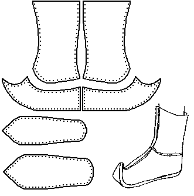
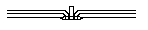
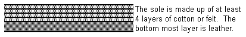

I have no solid source for this design, other than examining photographs. There are a number of detail differences between this interpretation and the version I had placed on this site previously.
Made with rawhide sewn into the seams.

The sole is four layers of felt or cotton fabric and then a thick layer of leather

The welt appears quite thick as well. Based on what little I can find on these shoes, they might also be made as stitchdowns.
As they near the toe, the sole and uppers must be sewn at DIFFERENT increments (i.e., the holes on the sole must be further apart than the holes on the welt), so that the toe will turn up correctly. The basic design is MY estimate of the pattern, and may not be absolutely accurate.
Footwear of the Middle Ages - Historical Shoe Designs/Number 46, by I. Marc
Carlson. Copyright 1996
This page is given for the free exchange of information, provided the Author's Name is
included in all future revisions, and no money change hands, other than as expressed in
the Copyright Page.